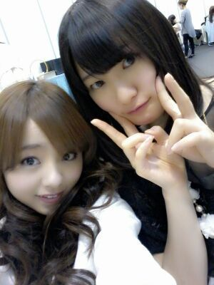
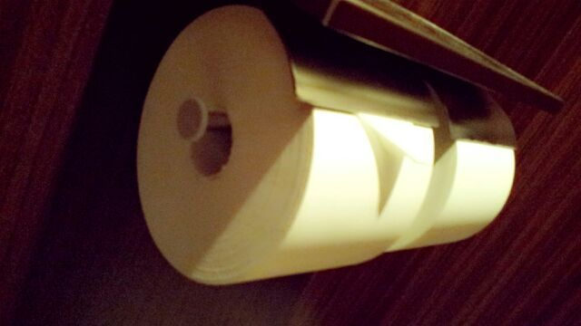

こんにちわぁ〜ん (/*´∨`*)/
ろってぃ−です〜
まひろの好きな かなりん♪も
隣にいるとです(´∨`)

今日もお稽古☆が終わり
満員電車にゆらゆらされながら
無事お家に到着した(・ω・)♪
皆さん今日も一日
おつかろってぃーー //
皆さんっ?? ))))
４月に入ってどうですう?
新しい生活には
慣れてきたかな(・ω・)??
新しいお友達だったりだとか...
できたあ？
まひろはねっ
今お稽古中のプリンシパル舞台が
新しい自分との出合いだおーー☆笑
小学生の頃から
演技にも興味があって
映画やドラマに出るのも
夢見てました。
乃木坂に入って
今 演じることに挑戦し始めています♪
自分も ドラマや映画の
オーディション受けたいな...。
今日もたくさん見てやって
正直めちゃ難しいけど
頑張ったでぇーー(^∨^))
いぇい /
ぴょん.シ(^3^)/もん返し.
乃木ここの感じのろってぃーが
素のろってぃーなんやろ(^^)?
★ィェッス !
しゃべらないと取っつきにくく
感じとられちゃうから
損しちゃうタイプ(´；ω；｀)...
なんてね？
皆どんどん話しかけてねん(〃∨〃)?
あの歌唱力は乃木坂のオーディションで披露したんだよね？その歌唱力があったからいまがあるのかな？
★最終審査が終わったあと
「君が一番うまかったよ !」って
言ってもらえた時は
『あっ、評価してもらえたんだ.』
って素直に嬉しかったです。
体調悪くて握手会いけない.
6枚目まで待っててくれるう(TT)?
★全然まっとくまっまくー.
嬉しいキモチ.ありがとね！
早く元気回復することを
願います(*´∨`*)
ぴょん !
ちょっといいですか...笑?
トイレットペーパーが
異様にでっかかったんで
つい撮ってしまいました 笑

ただ,それだけです (´∨`)てへっ
それではっ !
明日も１日頑張ろーねっ (*^∨^*)
皆だーーいすきっ ))
お風呂入らなっ (;/´∨`)/
皆さん おやすみなさい...のし.